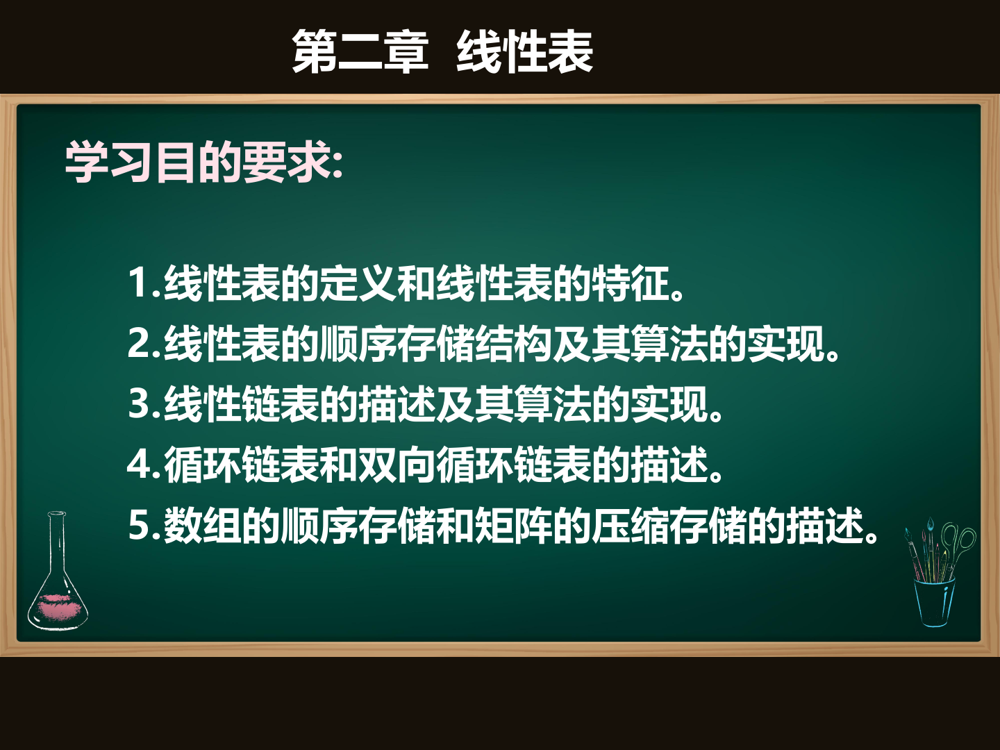

第2章
线性表
顺序表与链表的存储结构、基本操作、应用实例
📊 PPT课件

/ 53
🎬 视频讲解
顺序表 - 数组插入
顺序表 - 数组删除
单链表 - 头插法
单链表 - 尾插法
单链表 - 单链表删除
📝 本章核心知识点
一、线性表基本概念
- 定义：n（n≥0）个数据元素的有限序列，元素之间是一对一的关系
- 特点：除第一个和最后一个元素外，每个元素有且仅有一个直接前驱和一个直接后继
- 基本操作：初始化、求长度、按值查找、按位查找、插入、删除、遍历
二、顺序表
- 存储方式：用一组地址连续的存储单元依次存储数据元素
- 特点：随机存取（O(1)），但插入和删除需要移动元素（O(n)）
- 插入：在第i个位置插入，需移动n-i+1个元素，平均移动n/2个
- 删除：删除第i个元素，需移动n-i个元素，平均移动(n-1)/2个
三、链表
- 单链表：每个结点包含数据域和指针域，通过指针连接
- 头插法：新结点插入表头，时间复杂度O(1)，生成的序列与输入相反
- 尾插法：新结点插入表尾，时间复杂度O(1)（维护尾指针），序列与输入相同
- 双向链表：每个结点有两个指针域（prior和next），方便找前驱
- 循环链表：最后一个结点的指针指向头结点，形成环
四、顺序表 vs 链表
- 顺序表适合频繁查找、很少插入删除的场景
- 链表适合频繁插入删除、长度动态变化的场景
📝 本章测试
完成学习后，通过测试检验掌握程度